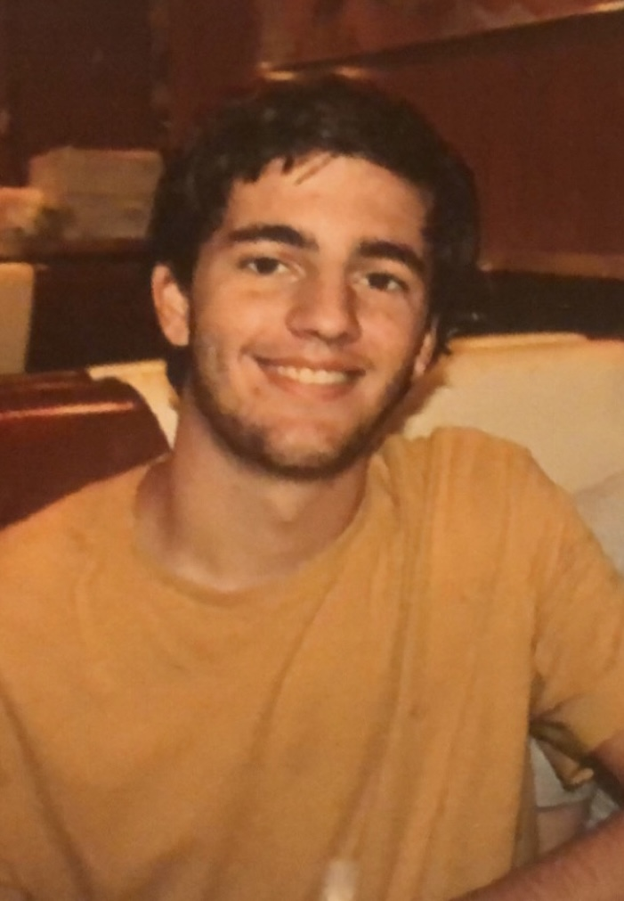

2020 - Present
Strong in Java, and C++. Learning HTML, CSS, and Python
I'm a Coder who specializes in Java, C++, HTML, CSS and Python. I'm passionate about challeneging myself and working on fun and difficult projects
Learn MoreI am a third-year student at the University of North Carolina at Charlotte, pursuing a degree in Computer Science with a concentration in Human-Computer Interaction. I also have a minor in Math, which I believe complements my major perfectly. Throughout my academic journey, I have gained a keen interest in the intersection of technology and human behavior. My passion for the field of computer science stems from my belief that technology should serve humans, making their lives easier and more productive. As a result, I am committed to learning and implementing innovative solutions to help bridge the gap between technology and human needs. As I approach graduation in 2024, I am excited about the opportunities that await me in the tech industry. While I plan on graduating in 2024, I have been considering staying one more year to pursue a major in Math. I am eager to explore the diverse possibilities available in this ever-changing industry and believe that my skills and knowledge will contribute significantly to the field. I am always looking to learn new things and collaborate with like-minded individuals to achieve common goals.
2020 - Present
Strong in Java, and C++. Learning HTML, CSS, and Python
2022 - Present
Currenly in a Web App design class where I am learning how to be a fornt end developer.